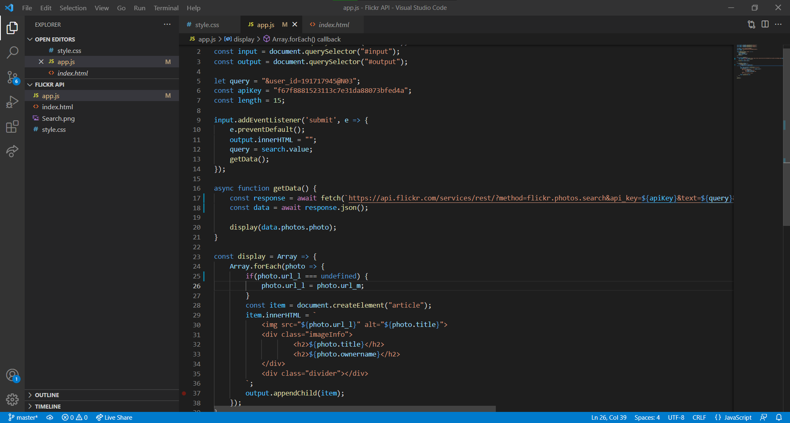

A page I made while playing with the flickr api. the design is made to blend into the background giving the pictures as large of a spotlight as possible. This page was made with mobile in mind, Sometime in the future I should go back and add a browser layout. this page is mostly javascript. Without it only a header will load.
Page : link
Github : link